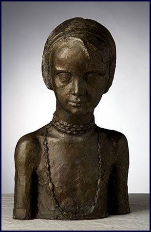
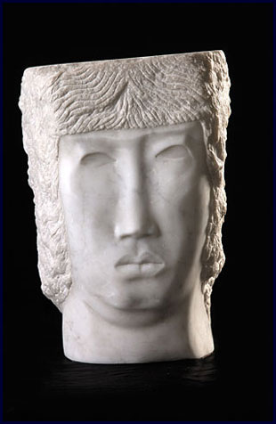
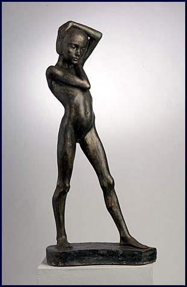
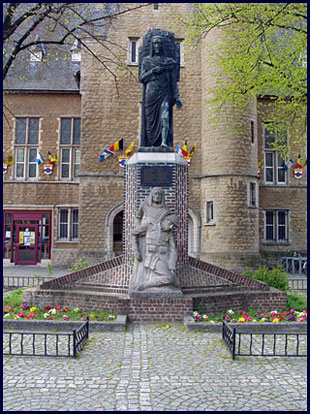
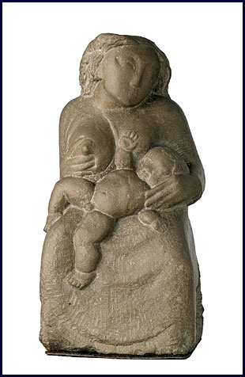
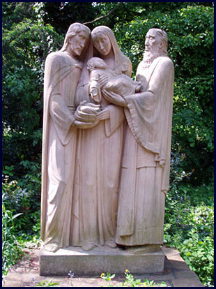
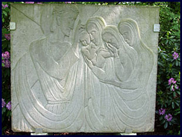

1934
Lyric-impressionist starting period
The starting point for the artistic development of Herman De Cuyper was the impressionistic clay modelling. He adopted this technique from his teachers Blickx and Van Perck at the academy. Rik Wouters had bent the technique into a lyrical instrument and his prestigious influence lingered on for a long time in the Mechelen sculpture centre.
De Cuyper's lyric-impressionist starting period began at the end of the twenties and continued roughly until about 1934. For in that year he made the "War Monument" of Bornem as a monumental termination of that vision.
His modelling art evolved rather quickly into a smooth surface treatment of the sculpture's skin. Especially the portrait and figure studies dominated his production and from the start the world of the child was his theme of predilection.
The models he portrayed or modelled in full in clothed or naked form came from his own family or circle of friends. Charlientje (1932), a life-sized child nude, illustrates his swift evolution to a smooth-surfaced modelé: this more classicistic approach perfectly connects with the prevalent tendency in Belgian sculpture. Professional literature describes this as animistic.


1937
Transition: taille directe and primitive art
As a starting artist Herman also received the influence of Flemish Expressionism, though with little effect on his work. The movement of expressive deformation of nature was against his feeling for shapes, which itself preferred a more sublimated styling of the shapes of the human body. He saw the confirmation of this opinion while viewing medieval western art at the Musée de Cluny in Paris in 1937.
Together with his friend and ethnologist Jan Vandenhoute (1913–1978), he discovered a third important resource, namely African primitive art. As from 1935, the artist started experimenting with the technique of the taille directe, first in wood, later in stone. From a modeller, he evolved — literally — into a sculptor of images.


1992
Visionary-animist period of maturity
From 1937 his mature works saw the light. These were mostly small sculptures in various stone and wood varieties. He was able to demonstrate his animistic vision in a series of sculptures which give shape to an imaginary world of idealised expressions of the key moments in life.
His most important theme became motherhood and everything related to it. He also started to make a series of decorative heads, trying to approach the aesthetics of the primitive sculptor as an emanation of Vandenhoute's findings.
The religious thematic was part of the repertoire of Herman De Cuyper from the very beginning, as most of his patrons and buyers were clerical bodies. His contribution to the renewal of religious sculpting in Flanders can hardly be neglected. In his religiously inspired work too, he was able to maintain his animistic vision. Up to the very end of his creative life, the artist was loyal to this visionary-animist style.


